P H Y S I C S
with a twist
Home
About
"BE LESS CURIOUS ABOUT PEOPLE AND MORE CURIOUS ABOUT IDEAS"
Inspirational Personalities
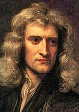
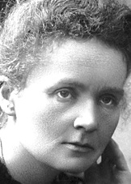
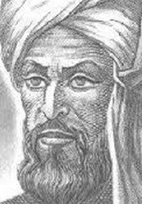
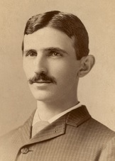
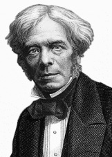
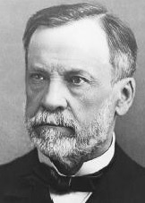
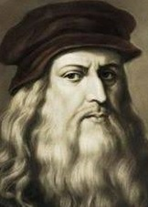
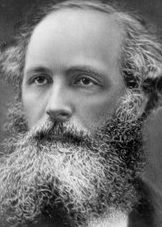
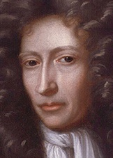
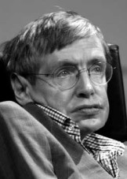
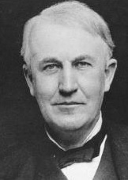
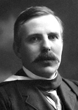
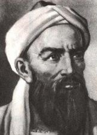
TOPICS OF INTEREST(As)
Kinematics
Dynamics
Forces
Work
Deformation
Waves
Electricity
Radioactivity
 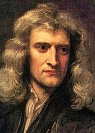
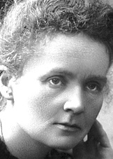
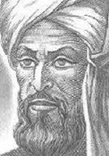
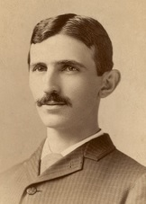
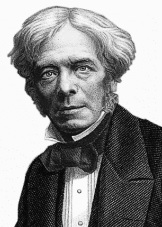
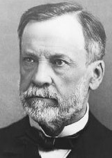
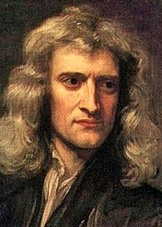
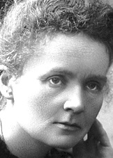
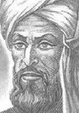
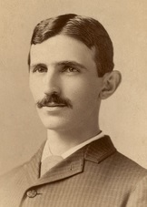
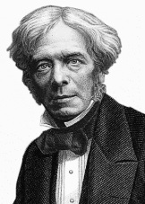
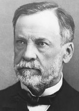